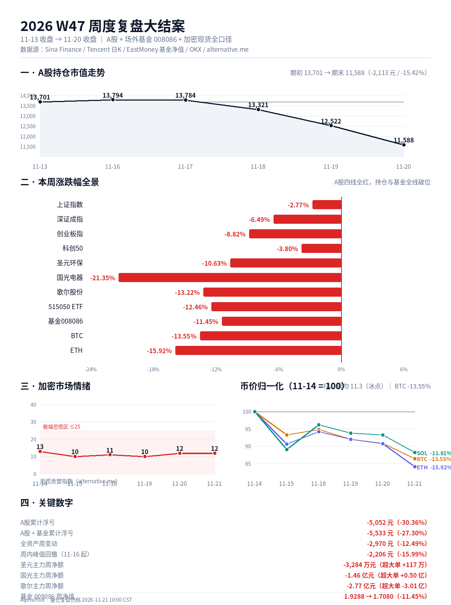

第47周 持仓与市场情绪复盘大结案
A股 + 场外基金(1,841.62 份口径) + 加密现货全口径。数据源：Sina / Tencent 日K / EastMoney 基金净值 / OKX / alternative.me。
一 · 总资产与盈亏走势
A股周一 11-16 冲至周内峰值 13,794 元，此后五连阴直落至 11,588 元，峰谷回撤 -2,206 元（-15.99%），为建仓以来最大周内回撤。本周没有一个交易日上涨：11-16 至 11-20 逐日 -0.59% / -0.13% / -1.93% / -2.78% / -5.58%（圣元），跌势在周五加速。A股+基金累计浮亏由 -3,013 元扩至 -5,533 元（-27.30%），单周吃掉 2,520 元。
二 · 大盘环境
周内四个交易日（11-17~11-20）涨跌家数：1,216:3,882 → 1,318:4,132 → 641:4,866 → 313:5,235，跌停家数 109 → 60 → 112 → 190，中位数 -1.41% → -1.20% → -2.55% → -5.08%。个股涨跌比从 0.31 一路崩到 0.06，跌超 5% 家数周五达 2,863 家。
性质判定：权重护盘下的中小盘流动性踩踏。沪深300 周五仅 -0.76%、上证 -1.23%，却对应个股中位数 -5.08%——指数跌幅严重低估了持仓的真实处境。两融与量化止损盘在 3,500 点一线集中释放，属去杠杆式下跌，不是普通调整。
三 · 持仓与观察池周度体检
15.15 → 13.54，周区间 15.26 ~ 13.54，收在全周最低价、创 60 日新低。逐日 -0.59 / -0.13 / -1.93 / -2.78 / -5.58%，周五放量 1.62 倍杀跌（3.5 万手 / 0.48 亿）。
均线：MA5 14.55 / MA10 15.08 / MA20 15.34 / MA60 16.49 —— 四线全在上方，完整空头排列，收盘较 MA60 折价 -17.9%，止跌信号全无。
主力（Sina 周累计）：-3,284 万元，五日仅周一 +40 万，此后 -431 / -663 / -791 / -1,439 万 逐日放大；超大单全周 +117 万（仅 11-19 一日），周五超大单 0——零机构承接的纯散户止损盘。
距离：防守位 14.90 已失守 -9.13%（连挂 3 日未清）；减仓目标 17.50 需 +29.2%，短期不可能。
→ 11-23（周一）09:30 无条件市价清仓全部 500 股。13.80~14.10 反抽是最后的减仓窗口，不是回本机会。严禁补仓摊薄。
10.21 → 8.03，周振幅 35.74%（10.90 ~ 8.03）。逐日 +2.25 / 0.00 / -5.08 / -9.99% 跌停 / -9.98% 跌停，连续两日跌停且收在全天最低，跌停价位无承接盘。
均线：MA5 9.55 / MA10 10.13 / MA20 9.50 / MA60 9.13 —— 收盘 8.03 全部击穿，较 MA60 折价 -12.0%，形态彻底破坏。
主力：周累计 -1.46 亿元。前两日超大单尚 +0.75 / +0.35 亿，11-18 起反手：净额 -7,404 万 → -1.35 亿 → -5,643 万；11-20 四档全出（大单 -0.44 亿、超大单 -0.09 亿、中单 -0.03 亿、小单 -0.01 亿），占成交额 12.6% → 明确派发 + 恐慌踩踏双杀，绝非洗盘。
距离：防守位 10.17 已失守 -21.04%（连挂 3 日未清）；止盈目标 11.30 已成笑话（需 +40.7%）。
→ 11-23（周一）09:30 无条件市价清仓全部 600 股；若开盘封跌停则挂跌停价排队，宁可排队不留仓。8.20~8.60 任何反抽即出货。
24.20 → 21.00，五连阴无一日反弹（-2.15 / -0.38 / -3.65 / -3.21 / -4.55），刷新 20 日新低。MA5 22.60 / MA10 23.74 / MA20 23.46 / MA60 22.78 —— 四线全破。
主力周净流出 -2.77 亿元，超大单 -3.01 亿、五日连续净流出（-1,798 / -4,526 / -8,052 / -6,160 / -9,576 万），机构在系统性减仓中没有丝毫回补迹象。
→ 卖飞成本从上周 +18.22% 收敛至 +2.59%。若 11-13 收盘 24.20 追高回补 600 股，本周将多亏 1,920 元。20.47 的止损是本周唯一正确的重大决策。观察池仍禁止试探，需站回 MA10 23.74 且超大单连续 2 日转正。
净值 1.9288 → 1.7080，单周 -11.45%。最惨 11-16 单日 -7.07%（1.9288 → 1.7925），此后 -2.14 / +1.87 / -0.37 / -4.06%。
底层穿透 515050：0.658 → 0.576（-12.46%），11-20 收 0.576 创 120 日新低（前低 0.575），缩量至 5 日均量 0.71 倍、收在最低附近无下影。MA5 0.597 / MA10 0.637 / MA20 0.669 / MA60 0.871 全在上方。
→ 剩余 ¥1,000 预算全周未动，避开 -12.46% 的整段下跌。下周触发：①515050 日成交额 ≥6.5 亿且收盘站回 MA10 0.637 → 500 元；②回踩 0.540~0.560 缩量长下影 → 500 元；③放量破 0.575 无下影 → 继续观望。三档不叠加。
四 · 加密全周情绪扫描
F&G：13 → 10 → 11 → 10 → 12 → 12（极端恐慌），周均 11.3、极值 10~13。上周均值 25.6，本周直接腰斩再腰斩——情绪已进入历史级冰点区，但冰点本身不是抄底理由。
周振幅：BTC 57,758 ~ 71,266（23.39%）→ 收 59,089 贴近期低；ETH 1,626 ~ 1,934（18.94%）失守 $1,700；SOL 67.15 ~ 82.39（22.70%）。
多空力量：BTC 多空账户比 3.25 → 3.06（峰值 3.45），SOL 3.18 → 2.69；BTC 持仓量 23.0 亿 → 20.0 亿（-14.7%）。价格下跌 + OI 收缩 = 多头被动平仓、杠杆主动去化，而非空头加仓压制，属健康出清方向但仍未完成。
现货：912.15 U（11-20 17:30）→ 865.37 U（11-21 10:00）。Binance $404.51 / Bitget $298.07 / Pionex $133.58 / Phantom $29.21。持仓：SOL 2.651 枚（¥182.49，$145 成本 -53.12%）、BTC 0.003189 枚（$188.90，-30.13%）、ETH 0.1436 枚（$235.74，-16.34%）。
→ 零杠杆现货，不加仓、不割肉、不挂左侧止损单。等 F&G 回升 >20 且 BTC 收复今日 24h 高点 $62,639 再评估。
五 · 纪律得失复盘
- 歌尔 20.47 止损离场：本周再跌 13.22%，若追高回补 600 股将多亏 1,920 元。卖飞成本从 +18.22% 收敛到 +2.59%——止损的方向性判断被整周行情验证。
- 基金 ¥1,000 预算全周未扣扳机：515050 -12.46%，含 11-16 单日 -7.75%，完整避开。
- 加密零杠杆、未挂左侧接针单、未抄底：F&G 一路从 13 跌到 10 也未动手，无爆仓、无插针误杀。
- 国光 10.17 防守 11-18 收盘失守（9.91，-5.08%），清仓指令连挂 3 日未执行。若 11-18 收盘即清，相对 11-20 收盘 8.03 少亏 1.88 元/股 × 600 = 1,128 元。这是本周最大欠账。
- 圣元 14.90 硬止损 11-19 盘中击穿（低 14.27、收 14.34），11-20 开盘应清未清。若 11-19 开盘 14.77 执行，相对 13.54 少亏 1.23 × 500 = 615 元。
- 圣元止损位两次下移（15.50 → 15.10 → 14.90），典型「止损跟着价格跑」。三次让步换来 -37.89% 浮亏，说明下移止损不是风控，是拖延。
- 台账断档：11-16（周一）无收盘快照，周报期初只能回推至 11-13。已按日K重建 11-16 市值 13,794 元补齐。
六 · 下周（11-23 起）作战计划
- 300867 圣元环保：09:30 无条件市价清仓 500 股（约 ¥6,770 落袋）。反抽 13.80~14.10 只减不加；严禁补仓摊薄、严禁扛单等反弹。清仓后移出主监控。
- 002045 国光电器：09:30 无条件市价清仓 600 股；封跌停则挂跌停价排队。8.20~8.60 反抽即出货。不等 MA20、不等止盈 11.30。
- 008086 华夏5G联接：剩 ¥1,000 观望。触发①成交额 ≥6.5 亿且站回 MA10 0.637 → 投 500 元；②回踩 0.540~0.560 缩量长下影 → 投 500 元；③放量破 0.575 无下影 → 不投。三档互斥不叠加。
- 加密现货：持有不动。F&G 12 冰点 + 周末续跌，等 F&G >20 或 BTC 收复 $62,639 再谈；SOL $69 距 $145 目标遥远，零杠杆不设左侧止损。
- 观察池 002241 歌尔：禁止试探。双条件缺一不可——站回 MA10 23.74 + 超大单连续 2 日净流入。
- 总仓位纪律：两只票清仓后 A股现金约 ¥11,588。在跌停家数回落至 30 家以下且个股涨跌中位数转正之前，一股不开。本周教训：系统性踩踏里，唯一的 alpha 是空仓速度。
